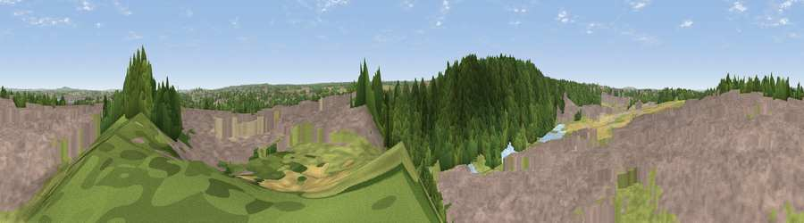

Viewpoint near Ebbsfleet Valley
#30177 in England · top 36% of its area beats it · near Ebbsfleet ValleyWhere it is
The exact computed spot (TQ 60525 73225). Click the marker for map links.
The view, rendered

A 360° render of this exact spot computed from the terrain model, tree cover and land cover — summer colours, afternoon light, calibrated against photographs of famous viewpoints. Real trees, hedges and buildings will differ in detail.
The panorama
Grey silhouette: terrain skyline in each direction (720 bearings, Earth curvature and refraction included). Dashed green: skyline with trees (+15 m) and buildings (+8 m) as obstacles. Blue strip: how far the ground is visible on each bearing.
Where the view opens
Wedge length = distance to the farthest visible ground on that bearing (vegetation-aware). Rings at 10, 25 and 50 km.
What fills the view
59% built-up · 18% woodland · 16% grassland · 4% cropland · 2% bare ground · 1% water
Angular shares of the visible panorama (visual magnitude), not map area. Landscape diversity 0.51 (0–1 Shannon).
Key numbers
More beautiful places nearby
The staircase of upgrades: each row has a higher view potential than everything closer. Driving times are estimates from straight-line distance, calibrated against real road routing — check an actual route before setting out.
| Place | Direction | Drive | Score |
|---|---|---|---|
| Viewpoint near Ebbsfleet Valley | SW · 1 km | ~2 min | 56.1 |
| Viewpoint near Vigo Village | SSE · 12 km | ~23 min | 61.9 |
| Viewpoint near Birling | SSE · 13 km | ~23 min | 65.2 |
| Viewpoint near Wrotham | S · 13 km | ~25 min | 66.6 |
| Viewpoint near Shipbourne | SSW · 20 km | ~34 min | 69.1 |
| Viewpoint near Westwell | SE · 45 km | ~66 min | 72.2 |
| Viewpoint near Lympne | SE · 62 km | ~85 min | 72.6 |
| Malling Hill | SSW · 65 km | ~87 min | 73.8 |
51.43529, 0.30803 · source: screening · position refined by local search. Computed location — check access rights before visiting.